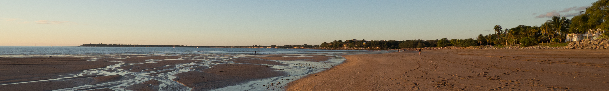

About me:
Postdoctoral researcher at
- Biogeochemical
Modelling Research Unit, GEOMAR Helmholtz Centre for Ocean Research
Kiel, Germany
My CV
Research interests
- Large-scale physical oceanography from the tropics to the high
latitudes
- Ocean-sea ice modelling
- Internal climate variability and its atmospheric teleconnections
- Ocean heat and carbon content
- Central European atmospheric circulation
Education
- 2023: Doctor of Philosophy UNSW in Climate Science, Sydney, Australia,
2-page
summary
- 2018: Master of Science ETH in Atmospheric and Climate Science,
Zurich, Switzerland
- 2016: Bachelor of Science ETH in Earth Sciences, Zurich,
Switzerland
Expertise related to UN Sustainable Development
Goals
In 2015, UN member states agreed to 17 global Sustainable
Development Goals to end poverty, protect the planet and ensure
peace and prosperty for all. My work contributes towards the following
goals:


Click the icons for more info on each of
the three goals.
Acknowledgment of Country
I acknowledge the Traditional Custodians, the Bedegal
and Wampanoag
people, who have cared for this land, sea and water that I live and work
on across Australia and the United States. I also pay my respects to
their Elders, past, present and emerging, for they hold the memories,
the tradition and the culture of Aboriginal and First Nations
people.